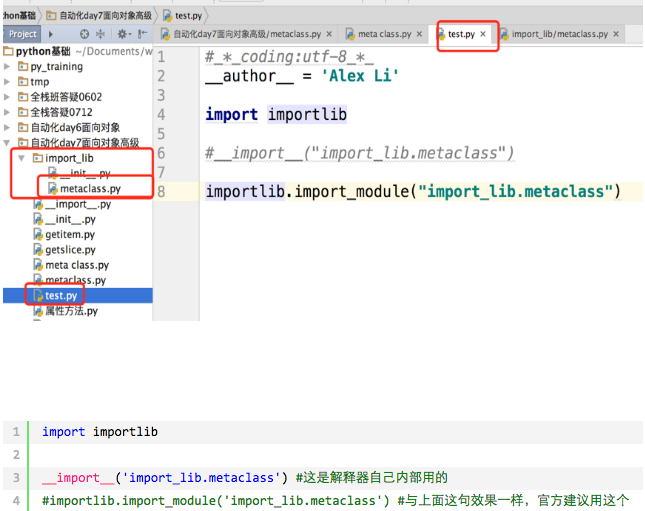

反射的概念是由Smith在1982年首次提出的，主要是指程序可以访问、检测和修改它本身状态或行为的一种能力（自省）。这一概念的提出很快引发了计算机科学领域关于应用反射性的研究。它首先被程序语言的设计领域所采用,并在Lisp和面向对象方面取得了成绩。
python面向对象中的反射：通过字符串的形式操作对象相关的属性。python中的一切事物都是对象（都可以使用反射）
四个可以实现自省的函数：
hasattr(object,name)
当然对于python的对象而言，属性包含变量和方法；有则返回True，没有则返回False；需要注意的是name参数是string类型，所以不管是要判断变量还是方法，其名称都以字符串形式传参；getattr和setattr也同样；
getattr(object,name,default=None)
获取object对象的属性的值，如果存在则返回属性值，如果不存在分为两种情况，一种是没有default参数时，会直接报错；给定了default参数，若对象本身没有name属性，则会返回给定的default值；如果给定的属性name是对象的方法，则返回的是函数对象，需要调用函数对象来获得函数的返回值；调用的话就是函数对象后面加括号，如func之于func();
setattr(object,name,value)
给object对象的name属性赋值value，如果对象原本存在给定的属性name，则setattr会更改属性的值为给定的value；如果对象原本不存在属性name，setattr会在对象中创建属性，并赋值为给定的value；
delattr(object,name)
删除object的name属性，不存在则报错
class BlackMedium:
feature='Ugly'
def __init__(self,name,addr):
self.name=name
self.addr=addr
def sell_house(self):
print('%s 黑中介卖房子啦,傻逼才买呢,但是谁能证明自己不傻逼' %self.name)
def rent_house(self):
print('%s 黑中介租房子啦,傻逼才租呢' %self.name)
b1=BlackMedium('万成置地','回龙观天露园')
#检测是否含有某属性
print(hasattr(b1,'name'))
print(hasattr(b1,'sell_house'))
#获取属性
n=getattr(b1,'name')
print(n)
func=getattr(b1,'rent_house')
func()
# getattr(b1,'aaaaaaaa') #报错
print(getattr(b1,'aaaaaaaa','不存在啊'))
#设置属性
setattr(b1,'sb',True)
setattr(b1,'show_name',lambda self:self.name+'sb')
print(b1.__dict__)
print(b1.show_name(b1))
#删除属性
delattr(b1,'addr')
delattr(b1,'show_name')
delattr(b1,'show_name111')#不存在,则报错
print(b1.__dict__)
四个方法的使用演示
好处一：实现可插拔机制
可以事先定义好接口，接口只有在被完成后才会真正执行，这实现了即插即用，这其实是一种‘后期绑定’，什么意思？即你可以事先把主要的逻辑写好（只定义接口），然后后期再去实现接口的功能
class FtpClient:
'ftp客户端,但是还么有实现具体的功能'
def __init__(self,addr):
print('正在连接服务器[%s]' %addr)
self.addr=addr
#from module import FtpClient
f1=FtpClient('192.168.1.1')
if hasattr(f1,'get'):
func_get=getattr(f1,'get')
func_get()
else:
print('---->不存在此方法')
print('处理其他的逻辑')
好处二：动态导入模块（基于反射当前模块成员）
